単純なドットチャート
Simple-Dot-Chart
サマリー
ドットチャートは、シンプルなスケール上にプロットしたデータポイントで構成される統計グラフです。これは量を簡単に比較できるので、円グラフに代わるものとしても使われます。このチュートリアルでは、ドットチャートの作成方法を説明します。
- 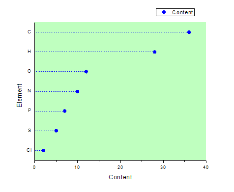
必要なOriginのバージョン: Origin 2015 SR0以降
学習する項目
このチュートリアルでは、以下の項目について解説します:
- 散布図を作成する
- X-Y軸を変更する
- 作図の詳細アップダイアログを使ってグラフを編集する
ステップ
多くの元素を含む化合物があるものとします。次の生データからドットチャートを作成します。
| 要素 |
目次 |
| C |
36 |
| Cl |
2 |
| H |
28 |
| N |
10 |
| O |
12 |
| P |
7 |
| S |
5 |
- 標準ツールバーの新規ワークブックアイコンをクリックし、新規ワークブックを作成してデータを入力します。
- 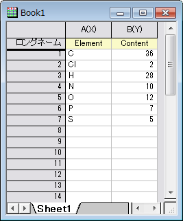
- 列Aと列Bを選択します。メニューから作図：基本の2Dグラフ：散布図と選択して以下のような散布図を作図します。
- 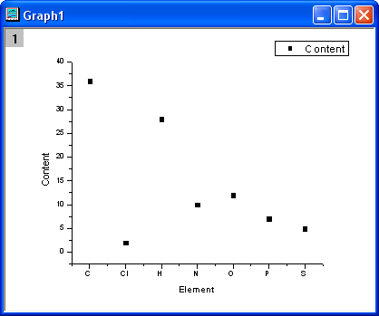
- グラフ操作：X軸とY軸の交換を選択します。
- 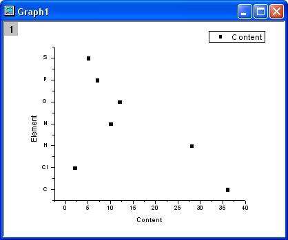
- グラフをダブルクリックし、作図の詳細ダイアログを開き、次の図のようにそれぞれのタブでシンボルとシンボルの色を変更します。
- 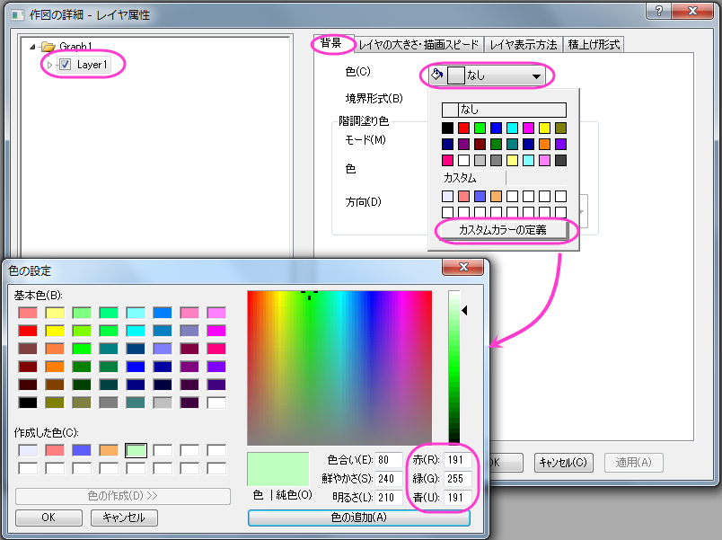
- 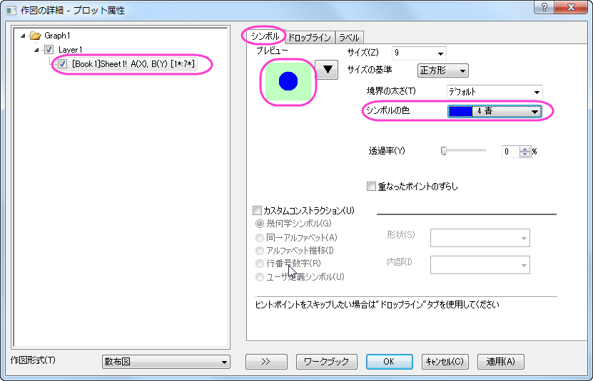
- 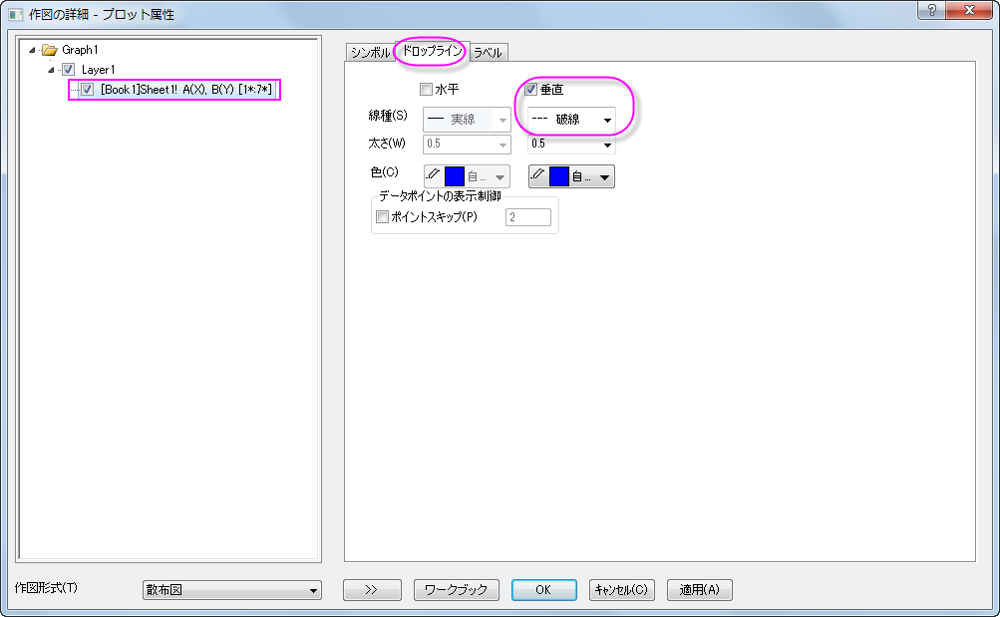
- OKボタンをクリックして設定を適用し、ダイアログを閉じます。下図のようなグラフになります。
- 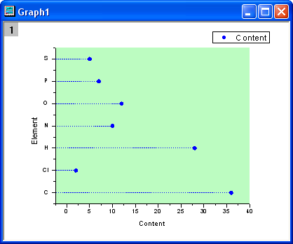
- では、XとY軸を再設定します。水平の軸をダブルクリックして、軸ダイアログボックスを開きます。スケールタブで、開始を0、終了を40にセットします。増分を10にセットします。
- 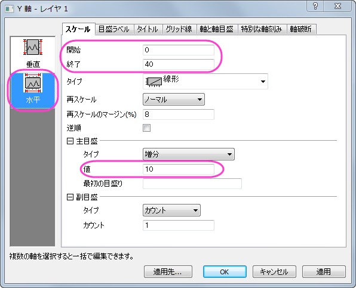
- 軸と軸目盛タブを開き、左側パネルで左アイコンを選択します。主目盛と副目盛の両方のスタイルをなしに設定します。OK
をクリックして変更を保存します。
- 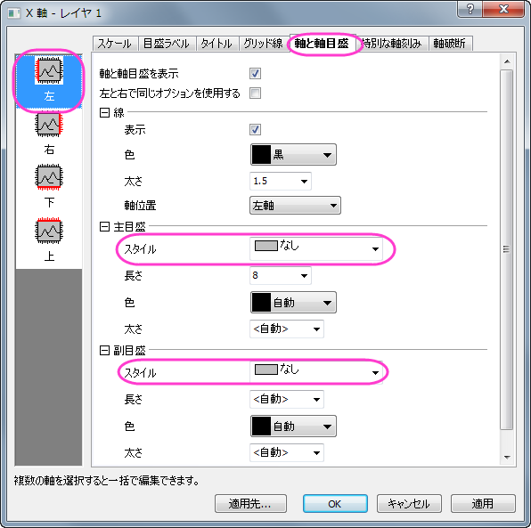
- 完成したドットチャートは下図のようなグラフになります。
- 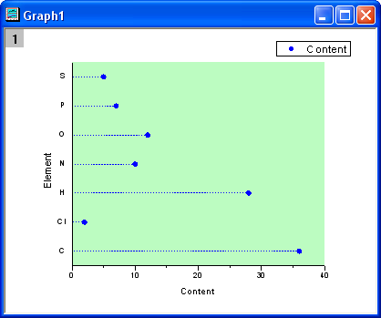